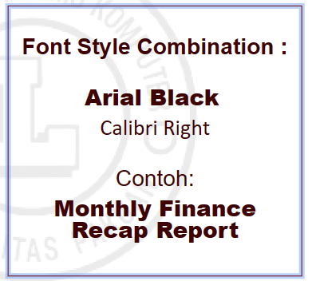
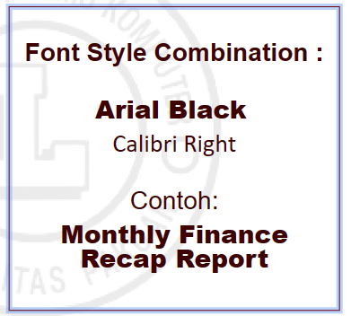

Microsoft Power Point
ditulis oleh salsa-ade-nayla. pada 06 Desember 2023
Microsoft PowerPoint digunakan untuk membuat file presentasi dalam bentuk slide. Fungsi PowerPoint :
- Menunjukan kesiapan dalam melakukan presentasi.
- Memudahkan audience untuk memahami pesan yang disampaikan.
- Memudahkan untuk menyampaikan ide, data dan fakta.
Cara Membuat Presentasi yang Baik
Memilih Judul yang Tepat
Buat judul secara ringkas, padat, dan sejalur dengan tema presentasi. Jangan sampai membuatnya terlalu Panjang dan tidak menarik. Contoh Tema :
- Motivasi
- Bisnis
- Pendidikan
Sesuaikan Template
Sesuaikan Template presentasi dengan tema yang akan kita buat. Memainkan kontras pada latar belakang dari teks juga penting agar audience tidak terlalu terganggu dengan warna yang mencolok.
Memilih Font
Memilih font yang tepat bisa membuat presentasi menarik, karena font akan memudahkan audience saat melihat dan membacanya. Ukuran :
- Judul (48)
- Isi (sesuaikan)
- Spasi (1,5)
.png) 

.png)
Sederhana tapi Komunikatif

Gantikan Bullets dengan Icon


Cara Membuat Presentasi yang Baik
- Memilih Judul yang Tepat
- Sesuaikan Template
- Memilih Font
- Sederhana tapi Komunikatif
- Gantikan Bullets dengan Icon
- Ganti Timeline dengan Smartart